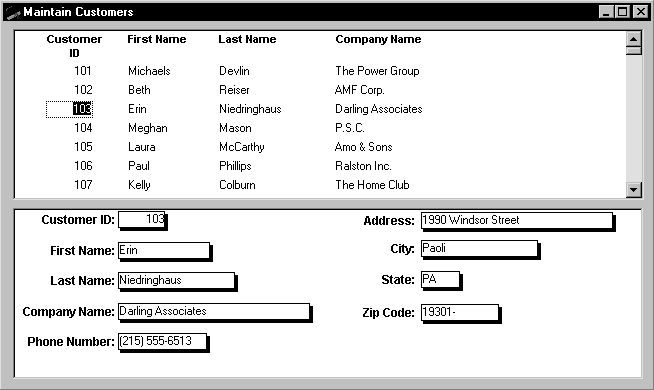
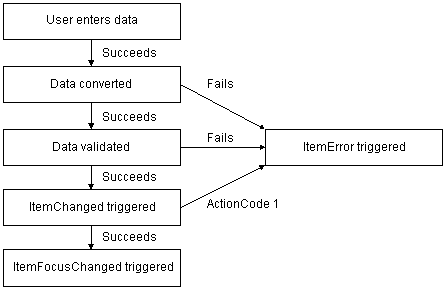

To handle user requests to add, modify, and delete data in a DataWindow, you can write code to process that data, but first you need to understand how DataWindow controls manage data.
As users add or change data, the data is first handled as text in an edit control. If the data is accepted, it is then stored as an item in a buffer.
A DataWindow uses three buffers to store data:
As the user moves around the DataWindow control, the DataWindow places an edit control over the current cell (row and column):

The contents of the edit control are called text. Text is data that has not yet been accepted by the DataWindow control. Data entered in the edit control is not in a DataWindow buffer yet; it is simply text in the edit control.
When the user changes the contents of the edit control and presses enter or leaves the cell (by tabbing, using the mouse, or pressing up arrow or down arrow), the DataWindow processes the data and either accepts or rejects it, depending on whether it meets the requirements specified for the column. If the data is accepted, the text is moved to the current row and column in the DataWindow Primary buffer. The data in the Primary buffer for a particular column is referred to as an item.
When data is changed in the edit control, several events occur. The names of the events are different in each environment, as shown in the table. This chapter refers to events using PowerBuilder names.
When the data in a column in a DataWindow has been changed and the column loses focus (for example, because the user tabs to the next column), the following sequence of events occurs:

You can affect the outcome of events by specifying numeric values in the event's program code. For example, step 3 above describes how you can force data to be rejected with a code of 1 in the ItemChanged event.
To specify action/return codes:
For information about codes for individual events, see the DataWindow Reference .
The following methods allow you to access the text in the edit control:
In addition to these methods, the following events provide access to the text in the edit control:
Use the Data parameter, which is passed into the event, to access the text of the edit control. In your code for these events, you can test the text value and perform special processing depending on that value.
For an example, see "Coding the ItemChanged event".
When you want to further manipulate the contents of the edit control within your DataWindow control, you can use any of these methods:
| CanUndo Clear Copy Cut LineCount Paste Position ReplaceText |
Scroll SelectedLength SelectedLine SelectedStart SelectedText SelectText TextLine Undo |
For more information about these methods, see the DataWindow Reference .
If data passes conversion and validation, the ItemChanged event is triggered. By default, the ItemChanged event accepts the data value and allows focus to change. You can write code for the ItemChanged event to do some additional processing. For example, you could perform some tests, set a code to reject the data, have the column regain focus, and trigger the ItemError event.
The following sample code for the ItemChanged event for a DataWindow control called dw_Employee sets the return code in dw_Employee to reject data that is less than the employee's age, which is specified in a SingleLineEdit text box control in the window.
This is the PowerBuilder version of the code:
int a, age
age = Integer(sle_age.text)
a = Integer(data)
// Set the return code to 1 in the ItemChanged
// event to tell PowerBuilder to reject the data
// and not change the focus.
IF a < age THEN RETURN 1
The ItemError event is triggered if there is a problem with the data. By default, it rejects the data value and displays a message box. You can write code for the ItemError event to do some other processing. For example, you can set a code to accept the data value, or reject the data value but allow focus to change.
For more information about the events of the DataWindow control, see the DataWindow Reference .
You can access data values in a DataWindow by using methods or DataWindow data expressions. Both methods allow you to access data in any buffer and to get original or current values.
The method you use depends on how much data you are accessing and whether you know the names of the DataWindow columns when the script is compiled.
For guidelines on deciding which method to use, see the DataWindow Reference .
There are several methods for manipulating data in a DataWindow control.
These methods obtain the data in a specified row and column in a specified buffer (Web DataWindow methods have separate methods for overloaded versions):
This method sets the value of a specified row and column:
For example, the following statement, using PowerBuilder syntax, assigns the value from the empname column of the first row to the variable ls_Name in the Primary buffer:
ls_Name = dw_1.GetItemString (1, "empname")
This PowerBuilder statement sets the value of the empname column in the first row to the string Waters:
dw_1.SetItem(1, "empname", "Waters")
Uses You call the GetItem methods to obtain the data that has been accepted into a specific row and column. You can also use them to check the data in a specific buffer before you update the database. You must use the method appropriate for the column's datatype.
For more information about the methods listed above, see the DataWindow Reference .
DataWindow data expressions refer to single items, columns, blocks of data, selected data, or the whole DataWindow.
The way you construct data expressions depends on the environment:
Expressions in PowerBuilder The Object property of the DataWindow control lets you specify expressions that refer directly to the data of the DataWindow object in the control. This direct data manipulation allows you to access small and large amounts of data in a single statement, without calling methods:
dw_1.Object.jobtitle[3] = "Programmer"
The next statement sets the value of the first column in the first row in the DataWindow to Smith:
dw_1.Object.Data[1,1] = "Smith"
For complete instructions on how to construct DataWindow data expressions, see the DataWindow Reference .
There are many more methods you can use to perform activities in DataWindow controls. Here are some of the more common ones:
Some, but not all, of these methods are available for the Web DataWindow client control, server component, or both. Each development environment provides a reference list of methods. For a complete list of DataWindow methods, see the PowerBuilder Browser for PowerScript targets or the Components tab of the System Tree for Web targets.For complete information on DataWindow methods, see the DataWindow Reference .